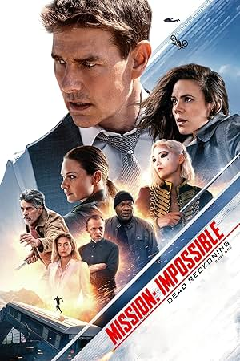
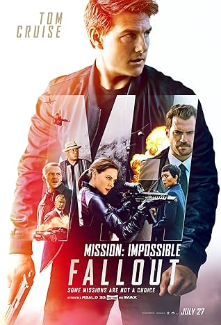
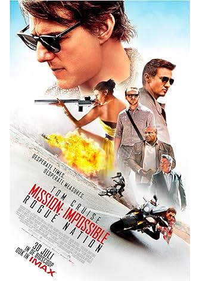
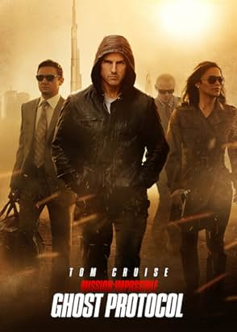
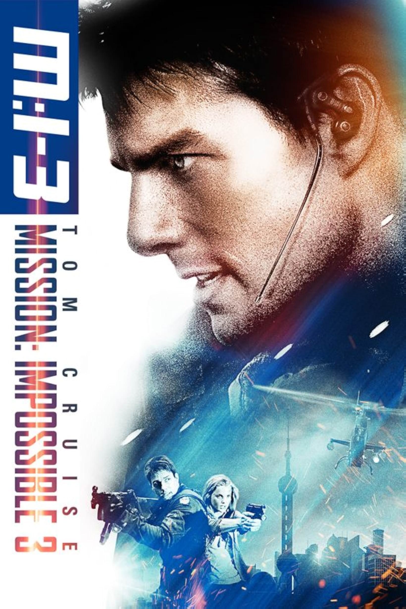
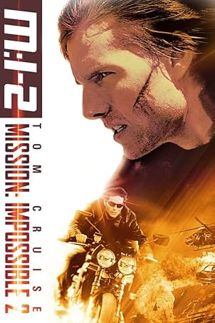
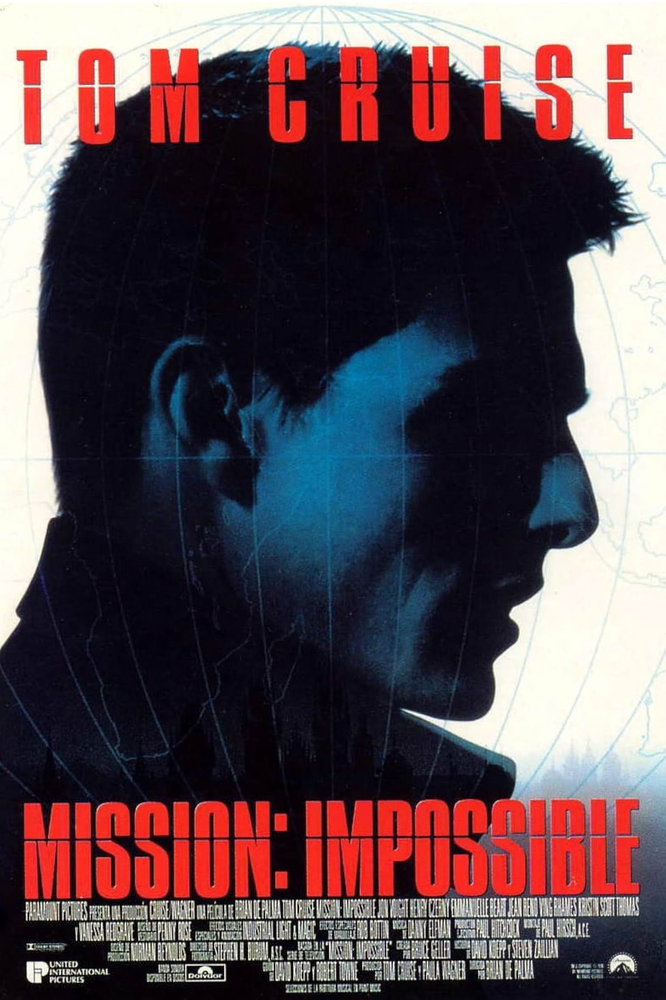

Series

Ethan Hunt and the IMF team must track down a terrifying new weapon that threatens all of humanity if it falls into the wrong hands. With control of the future and the fate of the world at stake, a deadly race around the globe begins. Confronted by a mysterious, all-powerful enemy, Ethan is forced to consider that nothing can matter more than the mission -- not even the lives of those he cares about most.
Mission: Impossible - Dead Reckoning (2023)
Director: Christopher McQuarrie
Stars: Tom Cruise・Hayley Atwell・Ving Rhames

Two years after Ethan Hunt had successfully captured Solomon Lane, the remnants of the Syndicate have reformed into another organization called the Apostles. Under the leadership of a mysterious fundamentalist known only as John Lark, the organization is planning on acquiring three plutonium cores. Ethan and his team are sent to Berlin to intercept them, but the mission fails when Ethan saves Luther and the Apostles escape with the plutonium. With CIA agent August Walker joining the team, Ethan and his allies must now find the plutonium cores before it's too late.—Anonymous
Mission: Impossible - Fallout (2018)
Director: Christopher McQuarrie
Stars: Tom Cruise・Henry Cavill・Ving Rhames

CIA chief Hunley (Baldwin) convinces a Senate committee to disband the IMF (Impossible Mission Force), of which Ethan Hunt (Cruise) is a key member. Hunley argues that the IMF is too reckless. Now on his own, Hunt goes after a shadowy and deadly rogue organization called the Syndicate.
Mission: Impossible - Rogue Nation (2015)
Director: Christopher McQuarrie
Stars: Tom Cruise・Rebecca Ferguson・Jeremy Renner

In the fourth installment of the Mission Impossible series, Ethan Hunt and a new team race against time to track down Hendricks, a dangerous terrorist who has gained access to Russian nuclear launch codes and is planning a strike on the United States. An attempt by the team to stop him at the Kremlin ends in a disaster, with an explosion causing severe damage to the Kremlin and the IMF being implicated in the bombing, forcing the President to invoke Ghost Protocol, under which the IMF is disavowed, and will be offered no help or backup in any form. Undaunted, Ethan and his team chase Hendricks to Dubai, and from there to Mumbai, but several spectacular action sequences later, they might still be too late to stop a disaster.—shreesha bhat
Mission: Impossible - Ghost Protocol (2011)
Director: Brad Bird
Stars: Tom Cruise・Jeremy Renner・Simon Pegg

A man named Owen Davian kills an IMF agent that was sent undercover by the legendary Ethan Hunt, who has retired from combat missions. Hunt now has a fiancé, Julia, who believes that he works for the traffic department when he really trains younger IMF agents to go into combat. He is assigned to his last mission. His mission, should he choose to accept it is to capture Davian, who is selling a toxic weapon called the rabbits foot. But Davian is reckless, cruel, and deadly. He promises Hunt that he will find Julia, hurt her, and Ethan will be too dead to help her. The mission is no more different to others, its dangerous, smart, and impossible; but now it's personal.
Mission: Impossible III (2006)
Director: J.J. Abrams
Stars: Tom Cruise・Michelle Monaghan・Ving Rhames

Chimera is a deadly virus that will bear a grisly death unless you are given the antidote. The creator of Chimera is murdered and the antidote is stolen by a disavowed I.M.F. Agent, Sean Ambrose (Dougray Scott). The Impossible Mission Force, (I.M.F.), hire the skilled and charming Ethan Hunt (Tom Cruise), and the beautiful Nyah Hall (Thandie Newton), who has had her share with Ambrose. Their mission, should they choose to accept it, is to send Hall undercover to Ambrose and learn what she can for Hunt to bring down Chimera, but they will have to break into a secure lab by jumping off of buildings and dodging bullets. Its impossible.
Mission: Impossible II (2000)
Director: John Woo
Stars: Tom Cruise・Dougray Scott・Thandiwe Newton

Based on the hit television series. Jim Phelps (Jon Voight) was sent to Prague for a mission to prevent the theft of classified material. His wife Claire (Emmanuelle Béart) and his trusted partner Ethan Hunt (Tom Cruise) were members of Phelps' team. Unfortunately, something went horribly wrong and the mission failed, leaving Ethan Hunt the seemingly lone survivor. After he reported the failed mission, Kittridge (Henry Czerny), the head of the agency, suspects Ethan of being the culprit for the failed mission. Now, Ethan uses unorthodox methods (which includes the aid of an arms dealer going by the name "Max" (Vanessa Redgrave)) to try to find who set him up and to clear his name.—John Wiggins
Mission: Impossible (1996)
Director: Brian De Palma
Stars: Tom Cruise・Jon Voight・Emmanuelle Béart